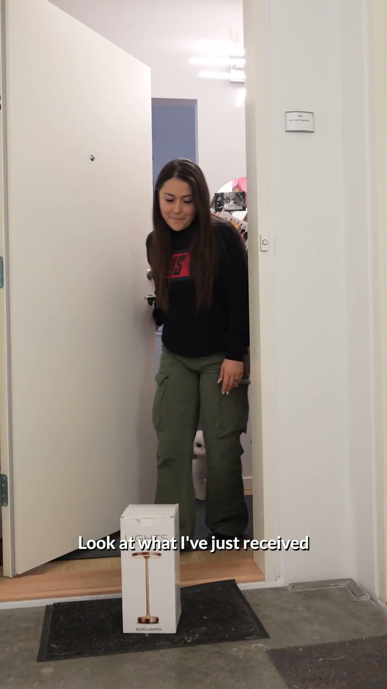
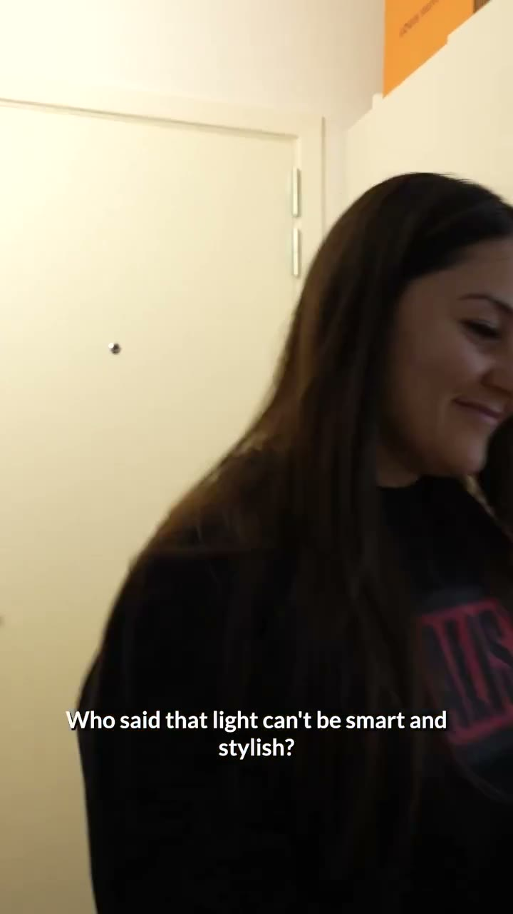
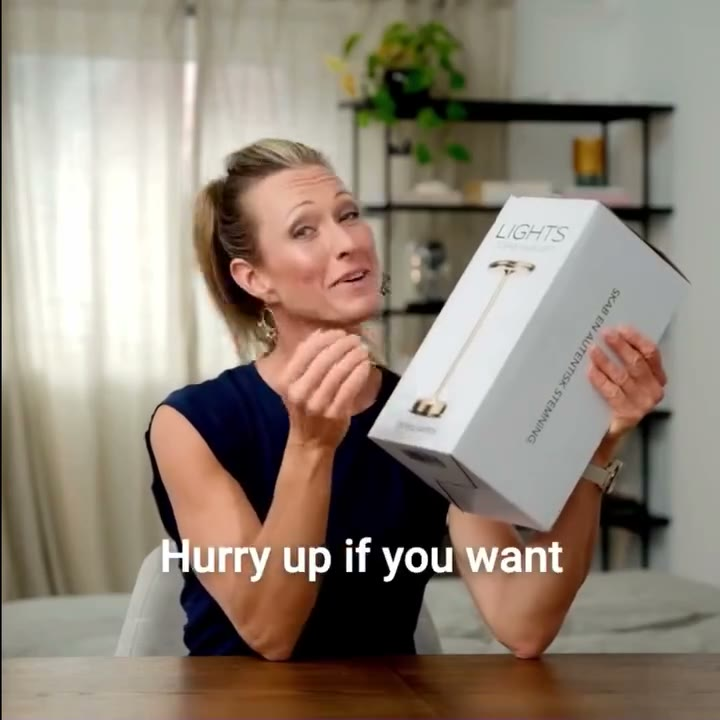
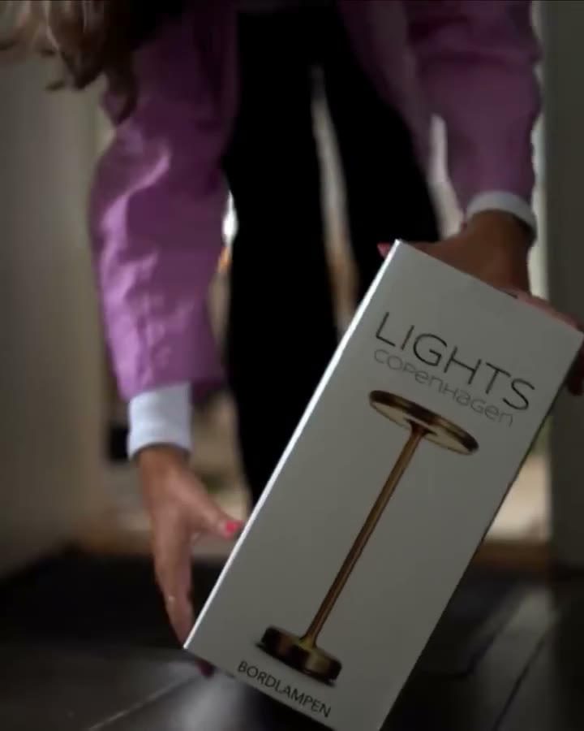
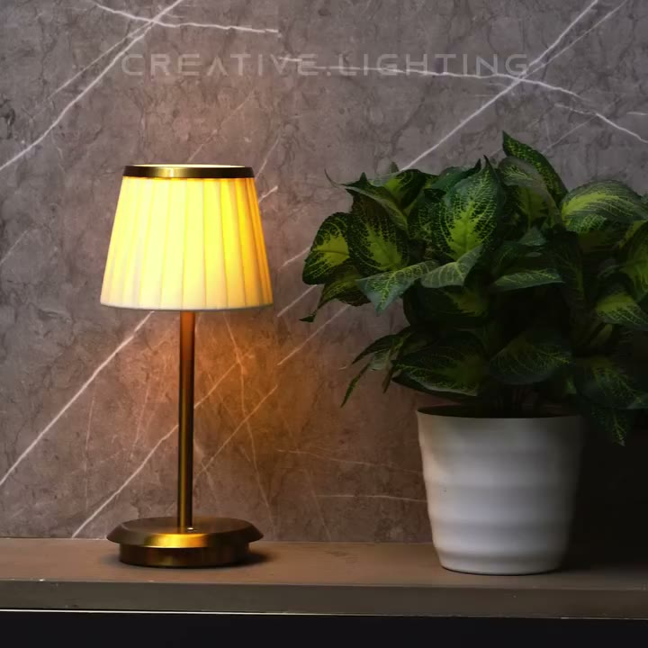
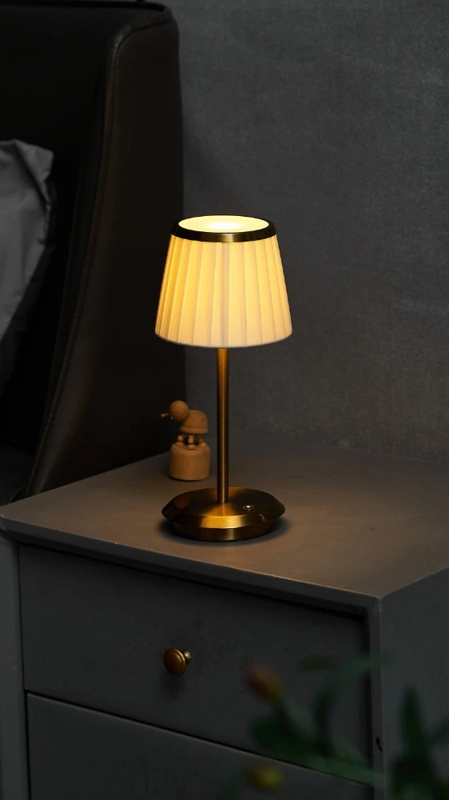
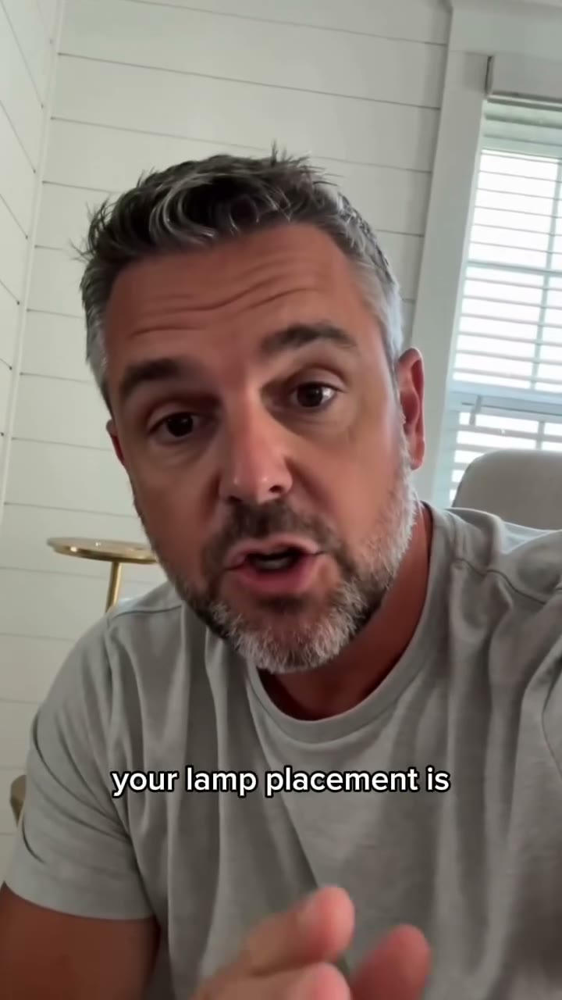
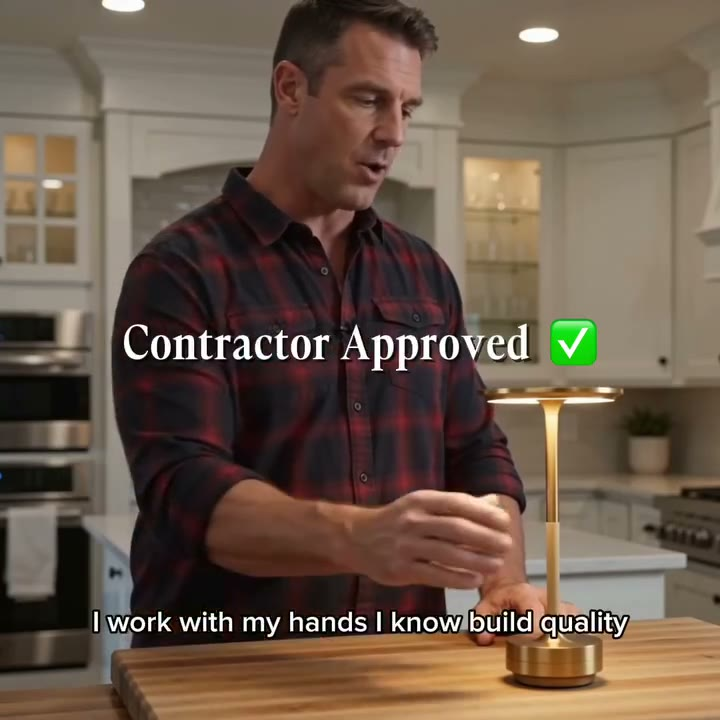
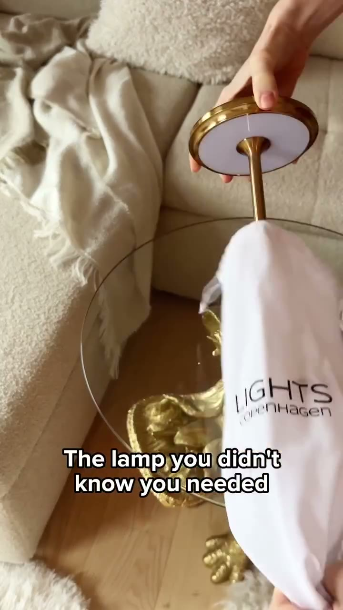

videoLights Copenhagen - EU · Lights Copenhagen - EU
Save 20% today
Longevidade de 1024 dias. No ar há 1024 dias na Biblioteca do Reino Unido: continuidade de anúncio, não prova de venda.
no ar há 1.024 dias · desde 18/12/2023
ativo
Dez criativos do mercado inteiro, ordenados por tempo no ar, cópias e alcance. Há ideias que vencem fora e não aparecem em nenhum anúncio em inglês. O texto mais repetido aparece em 16 anúncios da mesma rede.
Quem anuncia mais, há mais tempo e com mais variação. Mais dias no ar é sinal de continuidade, não de gasto.
| Operação | Anúncios ativos | Dias no ar (mais antigo) | Com 60+ dias | Variações (cópias) | Veredito | |
|---|---|---|---|---|---|---|
| Lights Copenhagen - EU | 32 | 1.023 dias | 32 | 71 | sem ficha | |
| The Card & Tile Club | 30 | 25 dias | 0 | 41 | sem ficha | |
| Stockholm-Lights-Official | 28 | 58 dias | 0 | 283 | sem ficha | |
| Stockholm-Lights | 20 | 452 dias | 19 | 59 | sem ficha | |
| Creative.Lighting | 16 | 117 dias | 16 | 16 | sem ficha | |
| Luceko dossiê usa outro recorte: 72 (busca pela URL do site) | 14 | 26 dias | 0 | 14 | OBSERVAR | ver ficha |
| Safelles | 9 | 80 dias | 3 | 15 | sem ficha | |
| Valentina Remington | 7 | 21 dias | 0 | 7 | sem ficha |
| # | Loja | Dias no ar | Formato | Cópias do texto | Países vistos | Pontuação | Biblioteca |
|---|---|---|---|---|---|---|---|
| 1 | Lights Copenhagen - EU lightscopenhagen.com | 1.024 dias | video | 1 | Reino Unido | abrir ↗ | |
| 2 | Lights Copenhagen - EU lightscopenhagen.com | 1.024 dias | video | 1 | Reino Unido | abrir ↗ | |
| 3 | Stockholm-Lights lightsstockholm.com | 453 dias | video | 2 | Reino Unido | abrir ↗ | |
| 4 | Stockholm-Lights lightsstockholm.com | 453 dias | video | 1 | Reino Unido | abrir ↗ | |
| 5 | Creative.Lighting restaurant.lighting | 118 dias | video | 1 | Reino Unido | abrir ↗ | |
| 6 | Creative.Lighting restaurant.lighting | 118 dias | image | 1 | Reino Unido | abrir ↗ | |
| 7 | Safelles safelles.com | 81 dias | video | 1 | Reino Unido | abrir ↗ | |
| 8 | Peggy Vance safelles.com | 80 dias | image | 1 | Reino Unido | abrir ↗ | |
| 9 | Safelles safelles.com | 80 dias | video | 1 | Reino Unido | abrir ↗ | |
| 10 | Stockholm-Lights-Official lightsstockholm.com | 59 dias | video | 16 | Reino Unido | abrir ↗ |
Clique em "Abrir prova" para ver fonte, datas, o que o anúncio prova e o que não prova. Os textos estão no idioma original (inglês), e a linha em português explica o sinal de cada um.

videoJUST NOW: Save 20% on the Lights Copenhagen table lamp 💡 Create a cozy atmophere in your home with this wireless table lamp. ✔️ Danish design ✔️ Touch-technologi ✔️ Rechargeable & wireless ✔️ Dimmer in 3 levels Buy now - https://lightscopenhagen.com/
No ar há 1024 dias na Biblioteca do Reino Unido: continuidade de anúncio, não prova de venda.
Escala de gasto, número de vendas, faturamento ou lucro. Anúncio no ar prova continuidade.

videoWho Said Light Can't Be Smart and Stylish? Discover the Lights Copenhagen Table Lamp 💡 A perfect blend of innovation and elegance in lighting. ✔️ Danish design ✔️ Touch-technology ✔️ Rechargeable & wireless ✔️ Dimmer in 3 levels Try it today 👉🏼 https://lightscopenhagen.com/
No ar há 1024 dias na Biblioteca do Reino Unido: continuidade de anúncio, não prova de venda.
Escala de gasto, número de vendas, faturamento ou lucro. Anúncio no ar prova continuidade.

video✨Meet the lamp from Lights Stockholm The table lamp features a stylish Danish design, which means it will fit into any home. The lamp is also cordless and rechargeable, so you can take it with you anywhere. 💰promo code "CODESALE10" VALID TODAY ✨Check out the offer today: https://lightsstockholm.com/collections/table-lamp
No ar há 453 dias na Biblioteca do Reino Unido: continuidade de anúncio, não prova de venda.
Escala de gasto, número de vendas, faturamento ou lucro. Anúncio no ar prova continuidade.

video✨Meet the lamp from Lights Stockholm The table lamp features a stylish Danish design, which means it will fit into any home. The lamp is also cordless and rechargeable, so you can take it with you anywhere. 💰promo code "CODESALE10" VALID TODAY ✨Check out the offer today: https://lightsstockholm.com/collections/table-lamp
No ar há 453 dias na Biblioteca do Reino Unido: continuidade de anúncio, não prova de venda.
Escala de gasto, número de vendas, faturamento ou lucro. Anúncio no ar prova continuidade.

video{{product.brand}}
No ar há 118 dias na Biblioteca do Reino Unido: continuidade de anúncio, não prova de venda.
Escala de gasto, número de vendas, faturamento ou lucro. Anúncio no ar prova continuidade.

image{{product.brand}}
No ar há 118 dias na Biblioteca do Reino Unido: continuidade de anúncio, não prova de venda.
Escala de gasto, número de vendas, faturamento ou lucro. Anúncio no ar prova continuidade.

videoNobody believes it isn't plugged in. That is usually the first thing people say when they see it. No cord, no outlet, no wire running down the wall. Just a warm glow sitting exactly where you'd never expect a lamp to be. The Ambient Touch Light is completely cordless and easy to move anywhere.
No ar há 81 dias na Biblioteca do Reino Unido: continuidade de anúncio, não prova de venda.
Escala de gasto, número de vendas, faturamento ou lucro. Anúncio no ar prova continuidade.
{{product.brand}}
No ar há 80 dias na Biblioteca do Reino Unido: continuidade de anúncio, não prova de venda.
Escala de gasto, número de vendas, faturamento ou lucro. Anúncio no ar prova continuidade.

videoWhen someone who installs lighting for a living buys one for their own home, that says everything. This is not someone who is easily impressed by a lamp. This is someone who knows what good build quality feels like, what clean lines look like, and what corners cut look like. And this is what they chose.
No ar há 80 dias na Biblioteca do Reino Unido: continuidade de anúncio, não prova de venda.
Escala de gasto, número de vendas, faturamento ou lucro. Anúncio no ar prova continuidade.

video⭐ Create a warm and elegant atmosphere in your home with our bestselling table lamps from Lights Stockholm. ✔️ Timeless Swedish & Danish design ✔️ Easy touch control ✔️ Rechargeable & completely wireless ✔️ 3 adjustable brightness levels ✨ No cables. No limits. Just beautiful light wherever you need it. Shop now and save up to 63% → lightsstockholm.com
No ar há 59 dias na Biblioteca do Reino Unido: continuidade de anúncio, não prova de venda.
Escala de gasto, número de vendas, faturamento ou lucro. Anúncio no ar prova continuidade.
Zero redes decodificadas: ideia central, gancho, ângulo, estrutura do texto e a objeção que cada uma derruba. É o que se copia: o método, não a marca.
não obtidoa análise de anúncios não trouxe o ranking
| País | Anúncios | Vídeo | Imagem | Carrossel | DCO |
|---|---|---|---|---|---|
| Reino Unido | 177 | 56% | 44% | 32% |
não obtidoa análise não trouxe as lojas locais
não obtidoa análise não trouxe os ângulos ausentes
| Ideia | Gancho em inglês (rascunho) | Formato | Por que testar |
|---|---|---|---|
| Meta: parede sem obra | “Wall lights. No electrician. No wiring.” | vídeo curto de instalação (colar, carregar, acender) | Ângulo de quem mora de aluguel; a luminária de parede é o termo de maior procura do Reino Unido (33.100). |
| Meta: o par | “One each side of the bed. Stick, tap, done.” | antes e depois do quarto | A Pridola vende a arandela em par; o par sobe o pedido médio. |
| Meta: luminária vai aonde você está | “The lamp that follows you from the sofa to the garden.” | vídeo da cúpula acesa em 3 cômodos | Stockholm-Lights escala luminária de mesa premium com esse uso. |
| Meta: noite de quebra-cabeça | “Puzzle night, finally in the right light.” | vídeo de cima da mesa | The Card & Tile Club roda esse ângulo em 7 países. |
| Shopping: luminária de parede | “Rechargeable Peel-and-Stick Wall Light” | Google Shopping (foto + título + preço) | Teste: acima da mediana do Shopping (£ 31,98), abaixo do quartil de cima (£ 45,00); usar "rechargeable" no título. |
| Loja | Anúncios ativos na Meta | No histórico da Meta | Ativo mais antigo da amostra | Formatos (rolagem do Reino Unido) | Anúncios no Google (mundo) | Anúncios no Google (país) | Leitura |
|---|---|---|---|---|---|---|---|
| lightsstockholm.com | 317 | 11.679 | 05/10/2026 | vídeo 40 · catálogo dinâmico 7 · imagem 1 48 anúncios na rolagem do Reino Unido | 19 | 4 Reino Unido | USD, todos iniciados de 04 a 06/10/2026 na amostra de 50 (rotação diária de criativos); criativos "Buy 1 Get 1 Free", "4.9/5 20.000+ clients", Halloween |
| pridola.com | 0 | 30 | não obtidosem anúncio ativo na amostra | nenhum na rolagem | 0 (a página diz que não há anúncios) | 0 (a página diz que não há anúncios) Reino Unido | domínio pridola.com devolve 0 ativos (a loja redireciona para pridola.co); busca "pridola"/"pridola.co" devolve cerca de 1.893 ativos, mas é busca por texto e mistura menções; páginas próprias Pridola |
| vykker.com | 86 | 1.695 | 25/09/2026 | imagem 19 · vídeo 2 · catálogo dinâmico 16 37 anúncios na rolagem do Reino Unido | 8 | 3 Reino Unido | anúncios do domínio vêm da página The Card & Tile Club (não Vykker): criativos "No Outlet Needed", "Shadow-Free Puzzle Light", USD; piso é da amostra de 50 de 86 (mais antigo visto no ALL: 2026-09-15) |
| oaklumehome.com | 5 | 5 | 05/10/2026 | nenhum na rolagem | 0 (a página diz que não há anúncios) | 0 (a página diz que não há anúncios) Reino Unido | 5 de 5 da página Oaklume, moeda BRL (conta do Mendes); todos iniciados em 05/10/2026 |
| lightscordless.com | 17 | 65 | 25/06/2026 | vídeo 1 · imagem 2 3 anúncios na rolagem do Reino Unido | 59 | 2 Reino Unido | amostra 100% da página Lightscordless, USD; histórico mais antigo visto na amostra (50 de 65): 2026-01-23; criativos recentes: "Museum Look. Renter-Friendly", "48-Hour Battery", picture lights |
| tap-light.de | 34 | 846 | 11/08/2026 | nenhum na rolagem | 57 | 57 Alemanha | página achada pelo censo do grupo norte (a busca pelo domínio devolve ruído); EUR, criativos "Gratis Aktion"; consulta pelo identificador da página em 06/10/2026 |
| luceko.com | 72 | 1.820 | 29/09/2026 | vídeo 11 · imagem 3 14 anúncios na rolagem do Reino Unido | 0 (a página diz que não há anúncios) | 0 (a página diz que não há anúncios) Reino Unido | amostra 100% da página Luceko, moeda AUD (alvo Austrália); criativos "Free Mystery Gifts", "Make Your Home Look 10X Better"; piso é da amostra (50 de 72), histórico 1.820 mostra rotação forte |
| Página | Desde | Dias | Gancho (primeira frase) | Oferta no texto | Formato |
|---|---|---|---|---|---|
| AFNAK | 09/03/2023 | 1.307 | $13.95 | não obtidosem oferta no texto | imagem |
| AFNAK | 09/03/2023 | 1.307 | AFNAK | não obtidosem oferta no texto | carrossel |
| Lights Copenhagen - EU | 18/12/2023 | 1.023 | Save 20% today ✨ | não obtidosem oferta no texto | catálogo dinâmico |
| Lights Copenhagen - EU | 16/01/2024 | 994 | Wow a beautiful lamp😱 | não obtidosem oferta no texto | catálogo dinâmico |
| Lights Copenhagen - EU | 16/01/2024 | 994 | Choose danish design, choose lights copenhagen💡 | não obtidosem oferta no texto | catálogo dinâmico |
| Lights Copenhagen - EU | 29/01/2024 | 981 | Stockholm Table Lamp | não obtidosem oferta no texto | imagem |
| Lights Copenhagen - EU | 02/05/2024 | 887 | Back in stock: Save 20% ✨ | Save 20% | vídeo |
| Lights Copenhagen - EU | 13/05/2024 | 876 | Save 20% today | Save 20% | imagem |
| Lights Copenhagen - EU | 03/06/2024 | 855 | Save up to 30% today | não obtidosem oferta no texto | vídeo |
| Stockholm-Lights | 11/07/2025 | 452 | Buy 1 Get 1 Free | não obtidosem oferta no texto | vídeo |
| Stockholm-Lights | 20/07/2025 | 443 | BUY 1 GET 1 FREE ⭐ | BUY 1 GET 1 FREE ⭐ today | vídeo |
| Stockholm-Lights | 29/12/2025 | 281 | ⭐ ⭐ ⭐ ⭐ ⭐ 4.9/5 | 20.000+ clients | não obtidosem oferta no texto | vídeo |
| Creative.Lighting | 12/06/2026 | 116 | {{product.name}} | 50% off | catálogo dinâmico |
| Creative.Lighting | 12/06/2026 | 116 | Creative Design | 50% OFF | carrossel |
| Safelles | 21/07/2026 | 77 | OUR BIGGEST SALE! | Buy 2 Get 1 FREE + Free Shipping, limited time | vídeo |